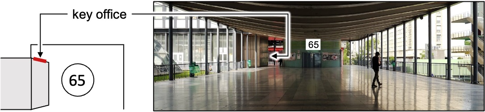

IJLRA (website)
Your administrator
They will help you when you're lost. You'll find them at the 5th floor, corridor 44-54. Check which team you're in to know who to look for:
- Olivier Labbey (FCIH)
- Catherine Dejancourt (MISES)
- Sandrine Bandeira (LAM)
- Evelyne Mignon (CEPT et MPIA)
Office and Key
-
Ask your N+1 where is your office.
-
Send a mail to Olivier Labbey asking if you can have a key.
-
Upon notification that your key is ready:
- (optional) Call the key office to check that they're open:
01 44 27 38 75. - Go get your key, taking either ID card or passport with you.
- (optional) Call the key office to check that they're open:

Email account
D'Alembert account
Your primary email address, of the form username@dalembert.upmc.fr.
- Ask the IT department for a D'Alembert account
- Connect to the online mail client
Sorbonne or UPMC account
A secondary email address, of the form username@sorbonne-universite.fr or username@upmc.fr (both equivalent), that is useful to access University related services (Software, DropSU, etc.).
You'll need a d'Alembert mail account to get it.
Mails sent to this address will (should) automatically be redirected to your D'Alembert account.
- Send a mail to Simona Otarasanu or go and see her: corridor 44/54, 5th floor, office 510. Ask for a Sorbonne University email address.
Annuaire UPMC
You should automatically be assigned an account ID and password upon signing your contract with the university. Check that it works on the Annuaire UPMC webpage.
- Send a mail to Simona Otarasanu otherwise.
Email Clients
You'll need a d'Alembert mail account and an Annuaire UPMC account to setup your email client. Configure it with:
-
IMAP incoming mail server with the ID and password used to connect to d'Alembert online mail client, using
heywood.dalembert.upmc.fras host. -
SMTP outgoing mail server with your Annuaire UPMC ID and password, using
smtps.upmc.fras host.
Check the D'Alembert Wiki for additional information.
Printers
Follow the instructions on the d'Alembert Wiki for printers setup.
Internet
Wired
-
Find your computer and/or internet hub mac address.
-
Send a mail to the IT department or go and see them: corridor 55/65, 5th floor, office 507. Ask if your device can be enabled on the lab network.
Wireless
Connect to eduroam with your Annuaire UPMC credentials.
ssh access
ssh access is useful when trying to access lab machines from remote networks.
- Create a public/private pair of ssh keys on your computer.
- Send a mail to the IT department with you public ssh key, asking if you can be granted access to the lab via ssh on
vauban.dalembert.upmc.frandchagall.dalembert.upmc.fr.
Lab intranet
You access to the lab intranet with your LDAP credentials. You already have an LDAP account if you asked for an "account on calculation room" when you filled in the online welcome form (check your mails).
- Send a mail to the IT department asking for an intranet account otherwise.
Room reservation
You'll need an access to the lab intranet, then:
- Connect to the lab room reservation service with your d'Alembert intranet credentials.
Crous (restaurant)
Once you have an Annuaire UPMC account:
-
Go to the Crous building (see map on home page) with an ID card or passport. Find the help desk (to your right as you enter).
-
(optional) Install the Izly app on your smartphone and link your account.
DropSU
DropSU is a Dropbox equivalent used by the university. Use your Annuaire UPMC credentials for access:
- In the browser via the HTTP interface.
- In your explorer/finder using Nextcloud.
Software
Check the list of software distributed by Sorbonne University.
Navigo (public transport)
The lab will reimburse part of your Navigo pass. This is only true for monthly or yearly subscriptions. To apply, bring your administrator:
- A scan of your Navigo pass (both sides).
- A proof of payment.